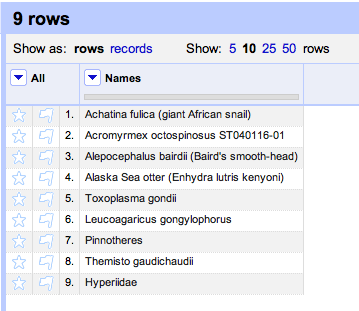

The services I've implemented so far are:
- EOL http://iphylo.org/~rpage/phyloinformatics/services/reconciliation_eol.php
- NCBI taxonomy http://iphylo.org/~rpage/phyloinformatics/services/reconciliation_ncbi.php
- uBio FindIT http://iphylo.org/~rpage/phyloinformatics/services/reconciliation_ubio.php
- WORMS http://iphylo.org/~rpage/phyloinformatics/services/reconciliation_worms.php
- GBIF http://iphylo.org/~rpage/phyloinformatics/services/reconciliation_gbif.php
- Global Names Index http://iphylo.org/~rpage/phyloinformatics/services/reconciliation_globalnames.php
To use these you need to add the URLs above to Google Refine (see example below). The EOL, NCBI and WORMS do a basic name lookup. The uBio FindIT service extracts a taxonomic name from a string, and can be viewed as a "taxonomic name cleaner".
How to use reconciliation services
Start a Google Refine session. Save the names below to a text file and open it as a new project.
Names
Achatina fulica (giant African snail)
Acromyrmex octospinosus ST040116-01
Alepocephalus bairdii (Baird's smooth-head)
Alaska Sea otter (Enhydra lutris kenyoni)
Toxoplasma gondii
Leucoagaricus gongylophorus
Pinnotheres
Themisto gaudichaudii
Hyperiidae
You should see something like this:

Click on the column header Names and choose Reconcile → Start reconciling.
A dialog will popup asking you to select a service.
If you've already added a service it will be in the list on the left. If not, click the Add Standard Services... button at the bottom left and paste in the URL (in this case
http://iphylo.org/~rpage/phyloinformatics/services/reconciliation_ubio.php).Once the service has loaded click on Start Reconciling. Once it has finished you should see most of the names linked to uBio (click on a name to check this):
Sometimes there may be more than one possible match, in which case these will be listed in the cell. Once you have reconciled the data you may want to do something with the reconciliation. For example, if you want to get the ids for the names you've just matched you can create a new column based on the reconciliation. Click on the Names column header and choose Edit column → Add column based on this column.... A dialog box will be displayed:
In the box labelled Expression enter
cell.recon.match.id and give the column a name (e.g., "NamebankID"). You will now have a column of uBio NamebankIDs for the names:You could also get the names uBio extracted by creating a column based on the values of
cell.recon.match.name. To compare this with the original values, click on the Names column header and choose Reconcile → Actions → Clear reconciliation data. Now you can see the original input names, and the string uBio extracted from each name:
These are some very simple ideas for using Google Refine with taxonomic name services. Obvious extensions would to use services that provide an "accepted name", or services that support approximate string matching so you could catch spelling mistakes (most of the services I've implemented here have some degree of support for these features).
Development notes
The code for these services is in Github (undocumented as yet, that's on the to do list). I had a few hiccups getting these services to work. There is detailed documentation at http://code.google.com/p/google-refine/wiki/ReconciliationServiceApi, but this seems a little out of step with what actually happens. Based on the documentation I thought Google Refine called a reconciliation service using HTTP GET, but in fact it uses POST. Google Refine always called my reconciliation service using "Multiple Query Mode", which meant supporting this mode wasn't optional. Once these issues were sorted out (turning on the Java console as per David Huynh's tip helped) things work pretty well.